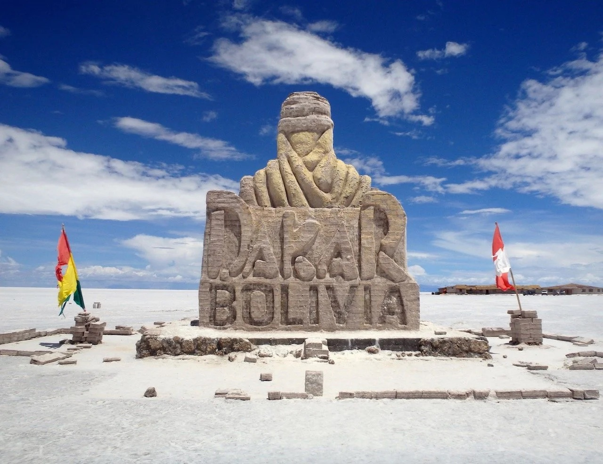

The Dakar Rally is one of the most challenging motor-sport
events in the world, which was held in 2009, consisting of biking,
quad bikes, cars, trucks and atvs, with it being a cross-country event.
Contestants face all types of terrain from sand, rain and mud to finish
first for the grand prize of $45,000 to $450,000. This race is so dangerous
to the point that various people pass away on the journey every year.

With the monument being home for flags from all over the world and is
always growing as more people from around the world visit the monument and
Add their flags. With this being the one of the last Dakar Rally to take place
in the Americas as they moved to Saudia Arabia and have taken place
there from 2020. The figure in the movement is the logo of the Dakar
Rally and stand tall at 8 meters high. With it having finished being built
in 2013 to commemorate Bolivia's first exposure as a great place for adventure tourism.